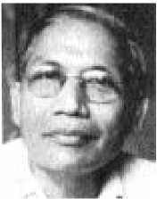
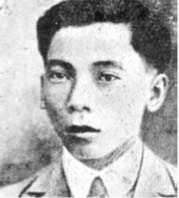
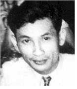

Hồ Hữu Tường (1910-1980)

Xuất thân trong một gia đình tá điền, Hồ Hữu Tường bị đuổi ra khỏi Trường Trung Học Cần Thơ năm 1926; sang Pháp và ít lâu sau đỗ tú tài, bắt đầu toán học ở Đại Học Marseille và mãn khóa ở Lyon. Tháng 5 năm 1930, Tường gặp Tạ Thu Thâu tại Paris trong cuộc biểu tình của người An Nam đòi thả những người khởi nghĩa ở Yên Bái bị kết án tử hình. Thoát khỏi bị bắt, trốn sang Bỉ với Phan Văn Hùm, hai người phát hành tờ Tiền Quân, rồi họ trở lại Paris ít lâu sau khi Tạ Thu Thâu bị trục xuất.
Họ tập hợp lại quanh nhóm Naville, Molinier và Frank, một nhóm người Đông Dương phân bộ Liên minh cộng sản (Đối Lập), gồm có Nguyễn Văn Lịnh, Trần Văn Sĩ, La Văn Rớt, Nguyễn Văn Nhi, Nguyễn Văn Nam, Nguyễn Văn Cử. Cùng các chiến hữu thảo ra một bản Tuyên bố của Phái Tả Đối Lập Đông Dương gửi cho Trotskij, nhưng hình như cốt để nói với đồng bào đang sôi sục về chính trị trong không khí sôi nổi đấu tranh của nông dân trong xứ.
Trở về Sài Gòn đầu năm 1931, anh dạy toán trong các trường tư. Tháng 5 anh gặp Đào Hưng Long, người đã tách ra khỏi đảng cộng sản sau khi Sô Viết Nghệ Tĩnh thất bại, rồi gầy dựng nhóm Liên minh cộng sản đoàn ở Bặc Liêu, Tường mời họ tham gia Phái Tả Đối Lập.
Tháng 8.1931 anh cùng Đào Hưng Long bắt đầu in ra tờ tạp chí Tháng Mười, in xoa xoa, khổ bỏ túi. Qua tháng 11 tất cả những người cộng sản đối lập tập hợp trong Phái Tả Đối Lập. Tháng 4 năm 1932, trong khi Tạ Thu Thâu xuất bản tờ Vô Sản, Tường tiếp tục tạp chí Tháng Mười. Tháng 11 Tường bị bắt rồi bị kết án 3 năm tù treo trong vụ xử 21 người cộng sản xu hướng Trotskyist, ngày 1 tháng 5.1933 ở Sài Gòn.
Có chân trong nhóm La Lutte từ lúc đầu. Năm 1935, bí mật tán trợ Lư Sanh Hạnh gầy dựng ‘’Chánh đoàn cộng sản quốc tế chủ nghĩa, phái tán thành Đệ Tứ Quốc Tế’’, chính anh đã viết - trong tạp chí Cách Mạng thường trực của nhóm nầy - lý luận xây dựng một ‘’đảng quần chúng’’, đối lập đảng cộng sản Đông Dương gồm những người cách mạng chuyên nghiệp chỉ biết tuân phục.
Tháng 9 năm 1936, Tường tách ra khỏi nhóm La Lutte, xuất bản tờ Le Militant (Chiến Sĩ), tố cáo chính trị đàn áp thường xuyên của Mặt Trận Bình Dân, mà báo La Lutte phê bình một cách rụt rè, và ra mặt công kích chủ nghĩa Stalin.
Tháng 9.1938, lợi dụng quyền tự do tương đối về xuất bản báo chí bằng chữ Quốc Ngữ, Hồ Hữu Tường và Đào Hưng Long liền xuất bản tờ báo chiến đấu Thày Thợ và cho tái bản tạp chí lý luận Tháng Mười, đăng điều lệ của Đệ Tứ Quốc Tế, giải thích lý luận của cách mạng thường trực áp dụng cho Đông Dương và kêu gọi tất cả các đồng chí từ Bắc tới Nam hãy đoàn kết lại để xây dựng một đảng theo Đệ Tứ Quốc Tế.
Hồ Hữu Tường bị bắt từ đầu chiến tranh cuối 1939 và bị đầy ra Côn Đảo. Sau khi được tự do vào năm 1944, Tường công bố với các bạn cũ: ‘’Tôi trở về con đường dân tộc, tôi cho rằng việc giai cấp vô sản giải phóng nhân loại là một huyền thoại lớn của Thế Kỷ XIX và tiềm năng cách mạng của giai cấp vô sản ở Châu Âu và Bắc Mỹ là một huyền thoại lớn của Thế Kỷ XX’’.
Sau ngày Nhật đảo chính tháng 3.1945, Hồ Hữu Tường đi ra Bắc. Ngày 27 tháng 8, người ta thấy tên Hồ Hữu Tường dưới tờ Điện Tín ủy ban nhân dân cách mạng Bắc Bộ gửi khẩn Bảo Đại thoái vị, bên cạnh hai gương mặt quan trọng của Việt Minh là Nguyễn Văn Huyên và Nguyễn Xiển:
Trở lại Nam Kỳ sau khi đất nước bị phân chia (1954), Hồ Hữu Tường làm cố vấn cho tướng cướp Bẩy Viễn rồi bị Ngô Đình Diệm kết án tử hình vào năm 1957. Nhờ Nehru và Albert Camus can thiệp, anh thoát chết rồi bị đưa ra Côn Đảo. Sau khi Diệm bị đổ, anh trở thành dân biểu đối lập thời Nguyễn Văn Thiệu.
Năm 1977, hai năm sau ngày quân đội miền Bắc tiến vào Sài Gòn, anh bị giam trong ‘’trại lao động cải tạo’’. Khi quá kiệt sức được thả ra khỏi trại, anh chết gục trước thềm nhà mình ngày 26 tháng 6 năm 1980.
Bốn năm sau, ở Paris xuất hiện tập tự sự ngắn của Hồ Hữu Tường: 41 năm làm báo, Hồi Ký.
Đào Hưng Long
(1905 -...)

Gốc ở Long Trì (Rạch Giá), gia nhập Thanh Niên Cách Mạng Đồng Chí Hội năm 1926. Qua năm 1929 trong khi phân liệt anh thuộc cánh cộng sản theo Ngô Gia Tự và trở thành đặc ủy miền Tây Nam Kỳ của đảng cộng sản Đông Dương.
Phong trào nông dân 1930-1931, Sô Viết Nghệ Tĩnh thất bại, anh phê phán đường lối của đảng, cho rằng đảng rơi vào chủ nghĩa phiêu lưu, mang tính chất công-nông mà đoàn lãnh đạo phần lớn xuất thân từ trí thức và nông dân. Đầu năm 1931, anh thành lập ở Bặc Liêu nhóm Liên minh cộng sản đoàn, tổ chức một ‘’ban mạo hiểm’’ có nhiệm vụ làm tiền cho đảng. Ít tháng sau, Hồ Hữu Tường, kéo Long nhập Phái Tả Đối Lập. Bị bắt ngày 24 tháng 10 năm 1932, anh bị kết án 1 năm tù rồi đưa đi làm khổ sai đập đá miền núi Châu Đốc. Ở đó anh lôi cuốn tù thường phạm làm reo, tuyệt thực phản đối công việc lao dịch. Chủ ngục đàn áp bạo tợn cuộc đấu tranh này, tống anh trở về Khám Lớn Sài Gòn.
Đào Hưng Long sinh sống tại Sài Gòn với nghề vẽ biển hiệu. Năm 1936, thời kỳ Mặt Trận Bình Dân, anh tham gia Phong Trào Đông Dương Đại Hội, viết cuốn Phương pháp làm việc của một Ủy ban hành động. Năm 1937, bị kết án hai tháng tù vì vận động nghiệp đoàn. Cuối 1938, cùng Hồ Hữu Tường xuất bản tờ báo công khai bằng chữ Quốc Ngữ Thày Thợ rồi viết trong báo Tia Sáng từ tháng giêng 1939. Đồng bị cáo phản đối chiến tranh, công trái và thuâ đảm phụ phòng thủ Đông Dương như các đồng chí Tia Sáng, anh bị kết án 2 năm tù, 10 năm biệt xứ ngày 2 tháng 10.1939. Trong lúc chiến tranh, anh bị giam trong các Trại Tà Lài và Bà Rá, rồi đầy sang Madagasca, chỉ trở lại xứ nhà vào năm 1947. Đào Hưng Long lặng bỏ đường lối đấu tranh giai cấp và từ ấy theo Hồ Hữu Tường trên con đường chủ nghĩa dân tộc trung lập.
Lư Sanh Hạnh
(1912-1982)

Sinh tại Bến Tre trong một gia đình trung lưu, học trung học ở Mỹ Tho. Năm 1932, là một ủy viên cộng sản có uy tín trong thành ủy Sài Gòn, anh định tổ chức lại đảng trên một cơ sở có phê phán, cho ra tờ Lao Công. Bị bắt ngày 9 tháng 10.1932 rồi bị kết án 15 tháng tù, anh bị tống đi Vũng Tàu đẩy xe rùa chở đá sỏi. Anh lôi cuốn tù thường phạm cùng đồng khổ sai bãi công. Bọn ngục tốt giam anh vào hầm tối, anh tuyệt thực dài ngày, rốt cuộc chúng trả anh về Khám Lớn Sài Gòn.
Anh bán hết gia sản, làm thợ cắt tóc lưu động để tuyên truyền rồi làm phóng viên cho báo Đuốc Nhà Nam của phái Lập Hiến. Tháng 7 năm 1935, anh bí mật thành lập ‘’Chánh đoàn cộng sản quốc tế chủ nghĩa (phái tán thành Đệ Tứ Quốc Tế)’’. Sau đó một năm cả nhóm bị hạ ngục khi Chánh đoàn này kêu gọi tổng bãi công hồi tháng 6.1936. Hạnh bị kết án 18 tháng tù. Tháng giêng năm 1939 anh cộng tác với tờ Tia Sáng. Anh trốn thoát lưới mật thám hồi tháng 9 năm 1939, ẩn thân miền Tây Nam Kỳ trong mấy năm chiến tranh.
Cuối 1944 Lư Sanh Hạnh trở lại Sài Gòn bí mật xây dựng Liên minh cộng sản, Đệ Tứ Quốc Tế. Sau khi Nhật đầu hàng, Liên minh vận động thành lập những ủy ban nhân dân, một chính quyền dân chúng phôi thai, phân tranh lưỡng quyền với chính phủ tự tuyên bố của Trần văn Giàu. Ngày 14 tháng 9 năm 1945, khoảng ba chục đại biểu các ủy ban nhân dân tụ họp tại trụ sở cùng với Lư Sanh Hạnh, công an Việt Minh ập tới, tước vũ khí và bắt họ giam lại. Ngày 22 tháng 9, người Anh làm chủ Khám Lớn, dịp tình cờ mà Hạnh và các chiến hữu thoát khỏi tay sát thủ của Việt Minh.
Sang Pháp năm 1947, anh viết bài trong tạp chí Quatrième Internationale (Đệ Tứ Quốc Tế) dưới bút danh Lucien. Trở về xứ năm 1954, Lư Sanh Hạnh chết vì bệnh lao ở Sài Gòn ngày 2 tháng 11 năm 1982.